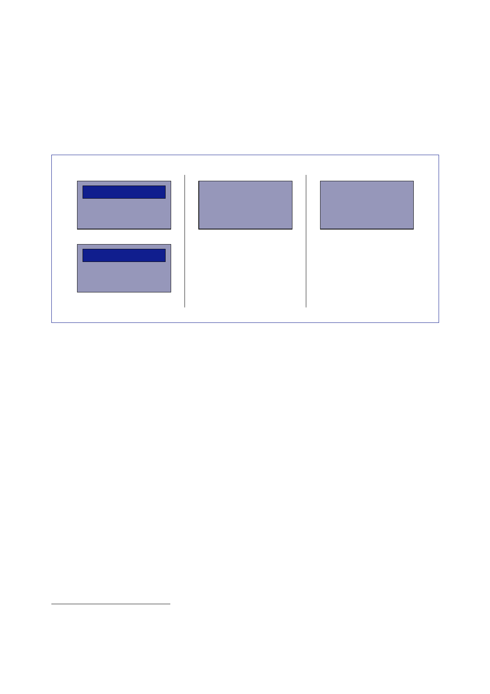

The Report
of the Iraq Inquiry
beyond 31
December 2004, and, in any event beyond 31 January 2005.
This
second
phase shall end upon the formation of an Iraqi government pursuant
to
a permanent
Constitution …”436
791.
In the TAL,
the model for the Transitional Government was defined as
follows:
Executive
President
Presidency
Council
Legislative
National
Assembly
Judicial
Judicial
Authority
Prime
Minister
Council of
Ministers
792.
The TAL stated
that the National Assembly would be elected in accordance with
an
electoral
law and a political parties law. The electoral law would “aim to
achieve the goal”
of no less
than 25 percent female representation and “having fair
representation for all
communities
in Iraq, including the Turcomans, ChaldoAssyrians, and
others”.
793.
The TAL
recognised the Kurdistan Regional Government as the
“official
government”
for the territories it administered on 19 March 2003, before the
invasion
began. It
would “continue to perform its current functions throughout the
transitional
period,
except with regard to those issues which fall within the exclusive
competence of
the federal
government”.
794.
On security,
the TAL named the Iraqi Armed Forces as “a principal partner in
the
Multi-National
Force operating in Iraq under unified command pursuant to the
provisions
of United
Nations Security Council Resolution 1511”. The Transitional
Government
would have
“the authority to conclude binding international agreements
regarding the
activities
of the Multi-National Force”.
795.
The AHMGIR
discussed the TAL in its meeting on 1 March.437
The
FCO
official
present judged the TAL a “good compromise” which had been accepted
by
Grand Ayatollah
al-Sistani but which “could be criticised for being produced
with
limited consultation”.
436
CPA
website, 6 March 2004, ‘Law of Administration for the State of Iraq
for the Transitional Period’.
437
Minutes, 1
March 2004, Ad Hoc Group on Iraq Rehabilitation
meeting.
336